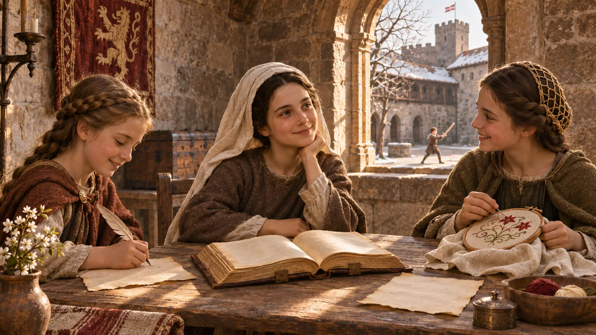

Santa Isabel da Hungria, capítulo 2: crescer em um castelo que não era o seu
Cercada de luxo, mas longe de casa, Isabel cresceu entre estudos, orações e olhares desconfiados. Neste capítulo, vemos quem a estranhou, quem ficou ao lado dela e como nasceu, entre ela e o jovem Ludwig, uma amizade que se tornaria amor.
No capítulo 1, vimos uma menina de quatro anos chegar de carroça ao castelo de Wartburg. Agora a pergunta é outra: o que acontece com uma criança quando o castelo vira a casa dela, mas nem todos ali entendem o seu jeito?
Uma promessa que mudou de nome
Quando Isabel chegou, o plano era casá-la com um dos filhos do landgrave Hermann I. Aqui as fontes divergem. Algumas contam que a noiva era, a princípio, o filho mais velho, também chamado Hermann, que morreu em 1216, e que a promessa passou então para Ludwig, o segundo filho. Outras, como a catequese do Papa Bento XVI, falam de Ludwig desde o início. Em todas as versões, quem se casa com Isabel é Ludwig.
Por volta dessa época, o próprio landgrave Hermann I também morreu, e Ludwig, ainda muito jovem, passou a governar a Turíngia. A menina que viera de longe crescia ao lado de quem logo seria o senhor daquelas terras.
Uma escola dentro do castelo
Enquanto Ludwig aprendia o ofício de cavaleiro, Isabel e as moças que a acompanhavam estudavam alemão, francês, latim, música, literatura e bordado. Era uma educação refinada para a época, que preparava a menina para ser, um dia, a senhora daquela terra.

Entre essas companheiras havia servas fiéis, como Guda e Isentrud, que ficaram ao lado dela pela vida toda e, depois da morte de Isabel, deixaram testemunhos preciosos sobre a infância e a vida da santa. É graças a elas que conhecemos tantos detalhes.
Quem a estranhava
O castelo era um lugar de festas, de etiqueta e de vida cortesã. Isabel, que gostava de rezar com calma, de dividir o que tinha com os pobres e de levar a fé a sério, destoava. Os relatos contam que ela passou a ser alvo de murmúrios na corte, e a landgravina Sofia, mãe de Ludwig, nem sempre aprovava o que via.
Um episódio ficou famoso. Numa festa da Assunção, Isabel entrou na igreja, tirou a coroa, colocou-a diante da cruz e ficou prostrada no chão, com o rosto coberto. Repreendida pela sogra, respondeu que não conseguia usar uma coroa de ouro enquanto via Jesus coroado de espinhos. Esse relato vem da tradição que guardou as lembranças das servas de Isabel e foi recordado pelo Papa Bento XVI.
Uma amizade que virou amor
No meio dessa vida, Isabel tinha um apoio: Ludwig. Os dois cresceram no mesmo castelo e, segundo Bento XVI, embora o noivado tivesse sido decidido por razões políticas, entre eles nasceu um amor sincero, animado pela fé e pelo desejo de cumprir a vontade de Deus. Tudo indica que ele a apoiava diante da desaprovação da mãe.
Um casamento combinado por interesses de família se tornou, aos poucos, uma amizade verdadeira.
O casamento, em 1221
Em 1221, Isabel tinha 14 anos, e Ludwig, cerca de 20. As fontes variam entre 20 e 21 anos para ele. Segundo Bento XVI, a celebração não foi pomposa, e parte do dinheiro que seria gasto no banquete foi destinada aos pobres. Já ali se via o caminho que ela escolheria: ser princesa, mas não esquecer quem passava necessidade na porta do castelo.
A série completa
| Cap. | Título | Publicação |
|---|---|---|
| 1 | A menina que veio de longe | 17/11 |
| 2 | Crescer em um castelo que não era o seu (você está aqui) | 24/11 |
| 3 | O pão e as rosas | 01/12 |
| 4 | O inverno da perda | 08/12 |
| 5 | Marburgo: o hospital e a pobreza escolhida | 15/12 |
| 6 | A santa dos pobres | 22/12 |
Fontes principais
- Papa Bento XVI — Audiência Geral sobre Santa Isabel da Hungria, 20 de outubro de 2010 (vatican.va).
- Libellus de dictis quattuor ancillarum sanctae Elisabeth, testemunho das servas que conviveram com Isabel.
- Verbete “Elizabeth of Hungary, Saint”, Catholic Encyclopedia.
As fontes divergem em alguns detalhes, como o noivo original de Isabel e a idade exata de Ludwig. Neste texto, indicamos quando há diferença entre elas.